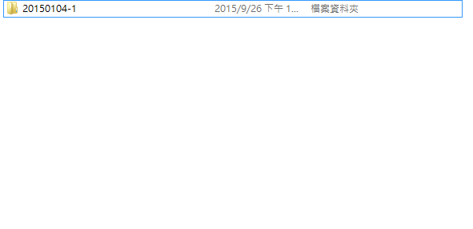
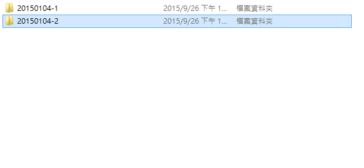
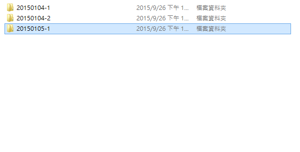
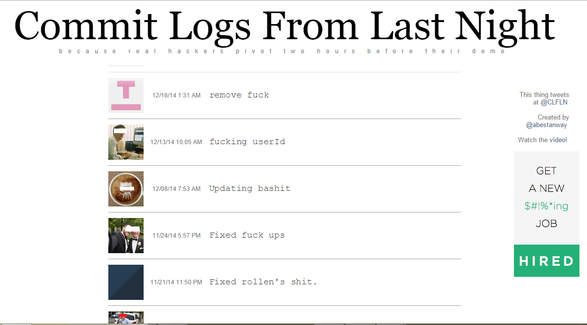
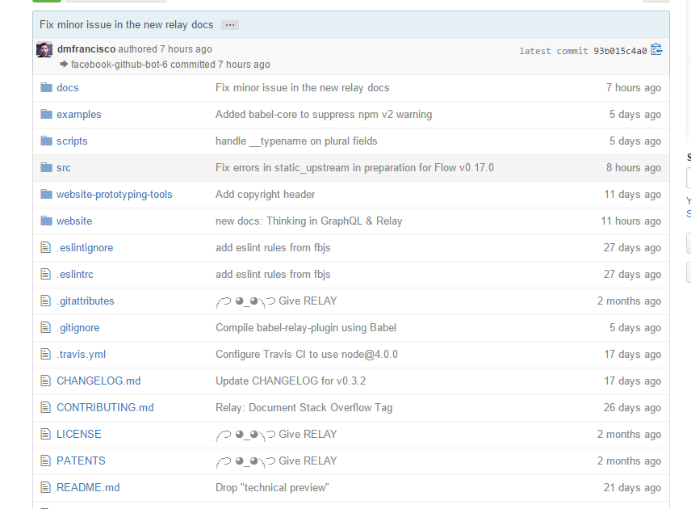

Git 版本控制
陳哲雋
2015/10/1
Who am I:
陳哲雋(阿哲)
師大資工 105級
第一屆師大資研社社長
先來做個調查:
程式/網站開發經驗
影片/影像/音樂製作修改
報告
版本控制
先來說個故事好了
你們要寫一個網站
老師/老闆/同學/自己:
再加個_____好了
於是你 被迫 開始努力.....
- 第13行加一點
- 第121行刪掉
- 第1201行做一點修改
- 第331~403行加一個新功能
- 等等!怎麼出新bug了∑(ι´Дン)ノ我再改改改....
- 我剛剛改了甚麼?隨便啦(๑•́ ₃ •̀๑)
- 圖片竟然在那(|||ﾟдﾟ)這一定是哪裡有問題...
- 我覺得這東西一定有問題,但看起來好像都對....( ×ω× )
- 管他的~結果一樣就行了啦~ヽ(✿ﾟ▽ﾟ)ノ
But....萬事最怕的But....
交上去那天
老師/老闆/同學/自己:
我覺得還是原本那個好了....
┬─┬ ノ( ' - 'ノ) 我能翻了這張桌子嗎?
為了避免這種問題你著麼做:
  
但我要怎麼記錄我改了甚麼?
- 筆記本?
- Excell?
三個月後就只有神知道了( ￣ 3￣)y▂ξ
再來說另外一個關於合作故事
一樣，你們要合作完成一個有一定規模網站
合作當然不是一個做完傳給下個做
而你們決定用_________來存放
but....又是一個but....
當大家陸陸續續把檔案上傳時.....
你們的計畫櫥櫃了(充滿了杯具(悲劇)與餐具(慘劇))
誰他X的改了我的碼!
我的比較好!
我三小時的努力...( ºΔº )
我
X
他
媽
的
台
北
!

我
先
上
傳
的
!
這一切都是____的陰謀啦!
誰寫的!這結果不對啊!Σ(;ﾟдﾟ)
還可能因為同時上傳....
隊友只能無奈表示:
版本控制
本地端版本控制
ex:rcs

集中式版本控制
ex:CVS、Subversion

分散式版本控制
ex:Git

安裝
http://ntnucic.github.io/104/環境設定
git config --global user.email "your email"
git config --global user.name "Your Name"
git config --global color.ui true
額外設定
git config --global alias.co commit
git config --global alias.st status
git config --global alias.lg "log --color --graph --all --pretty=format:'%Cred%h%Creset -%C(yellow)%d%Creset %s %Cgreen(%cr) %C(bold blue)<%an>%Creset' --abbrev-commit --"
git help "command"
git init
練習
大家先開一個資料夾並初始化
然後新增一個檔案
git status
git st
git add "file"
git add .
git commit
git co

偷懶(｢･ω･)｢
git commit -m "commit"
git commit -am "commit"
add救星
git reset "file"
練習
把剛剛新增的檔案做commit
然後用git status確認commit成功
何時該commit?
差異查看
git diff
git diff --cache
git log
git lg
git show "revisions"
回到舊版本
git checkout "revision"
練習
至少新增三筆commit
然後試著查看舊版本
放棄當前編輯
git checkout -- "file"
復原到舊版本
git revert "reversion"
git reset "reversion"
git reset --hard "reversion"
不想再追蹤
git rm "file"
已在stage
git rm --cached "file"
重新命名
git mv "oldname" "newname"
更換檔案位置
練習
給大家玩一下以上功能
public/private
GitHub EducationREADME.md
Markdown練習
在GitHub上建立一個repo
git clone "git repo"
git remote -v
git push
練習
把一個repo clone下來
新增一commit並push上去
git remote add "name" "URL"
git remote rm "name"
git remote remove "name"
git pull "name"
git push "name"

練習
另外開一個新資料夾
然後在這資料夾中pull repo
最後新增幾筆commit後push回去
commit
拜託，不要讓人困擾(シ_ _)シ圖片來源
F_CK commit
༼ つ ◕_◕ ༽つ Give RELAY
Branch

git branch
git branch -v
create branch
git branch "new branch"
git checkout -b "new branch"
更換branch
git checkout "branch"
git push "remote" "remote_branch"
git push "remote" "local_branch":"remote_branch"
git pull "remote" "remote_branch"
刪除遠端branch
git push "remote" :"branch"
刪除本地branch
git branch -D "branch"
練習
開幾個branch做前面指令的練習
branch的push一定要試試看
git merge "branch"
Conflict
練習
練習merge,並試著創造conflict
嘗試自己解conflict
其實只要放到gh-pages的branch
同場加映: .git權限很重要
感嘆師父，讚嘆師父，Git超棒der